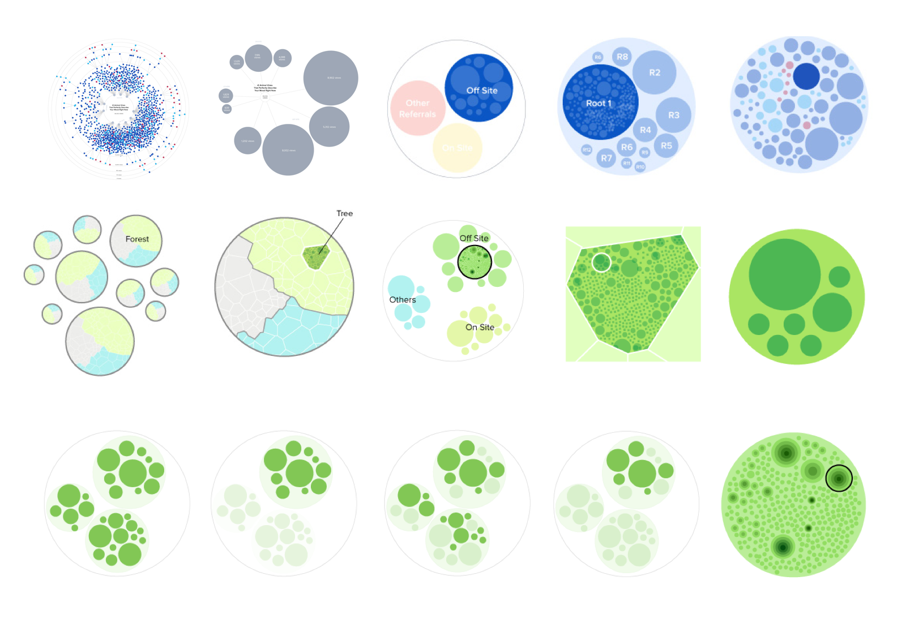

Pound Visualization & Dashboard
Visualize how content spreads across the social web
Role: Product Design
Situation
BuzzFeed developed a proprietary technology called POUND (Process for Optimizing and Understanding Network Diffusion) that tracks how content was shared and spread across the social web. The knowledge held in this data could help us to understand our audiences as well as provide insights on what would make stories go viral on the web.
Opportunity
Create an exploratory dashboard that visualizes and measures how a piece of content spreaded around the social web that helps our editorial team and advertising partners to better understand our audience’s content consumption and sharing behavior, and guide them to make better, more engaging content to connect people.
Solution
POUND was first made available to a few advertisers in an iterative partnership. As the sole designer on the team, I worked closely with five engineers, two data scientists, two product managers and one project manager to create the data visualization and dashboard for our advertisers to explore data around their paid contents.
Explore the Visualization
The visualization is the core piece of the dashboard. I started the design by researching the existing D3 models that show a network of nodes and sub-nodes. I collaborated with an engineer to build out several prototypes with sample data and quickly identified the packed circle graph was the most intuitive design to Users, and the most feasible for rendering a large, dynamic dataset. 
Color of the circle
The sharing network of a piece of content is represented in a cluster of circles. Each circle represents a promotion source that ignites the sharing downstream. A promotion source could be a BuzzFeed promotion (red), Facebook promotion (dark blue), Tweet (light blue), or newsletter link (gray).
Size and brightness/darkness
The size of the circle represents the number of shares that particular promotion source has produced in totals. The shade of the circle represents the number of re-shares downstream.

Together, they show the reach and engagement of the content. The bigger the circle, the higher the reach; the darker the circle, the deeper the engagement.

Refine the Interaction
Prototype ⟶ Final version


The Dashboard
The dashboard enables our advertisers to drill down to each promotion source and see the key metrics (Propagation, Penetration, and Sharability) that attributes the content virality. Users can also filter to see the network effect on particular platforms (Facebook app, BuzzFeed app, BuzzFeed site) or devices. (Mobile web, mobile app, Desktop)

Training & Onboarding
Partnering with the project manager and product manager, we put together an onboarding guide to train our Client Services team who would be guiding our advertisers and clients to explore the data using the dashboard.

Results

The Pound dashboard and technology received positive feedback from our advertisers and helped BuzzFeed to position themselves as a data-driven publishing partner to our clients. However, due to a market shift in the content consumption, the dashboard got sunsetted. Despite that, I have learned a lot about what it takes to transform a raw dataset into an actionable tool that helps to solve a problem. I also learned how to explain a complex idea using design and storytelling.